用 AI 造工具，而不是聊天——我如何把7亿小米 Mimo Token 花在刀刃上
前言
小米mimo百万亿Token创造者激励计划 ，活动截止到 2026年5月27日16:00
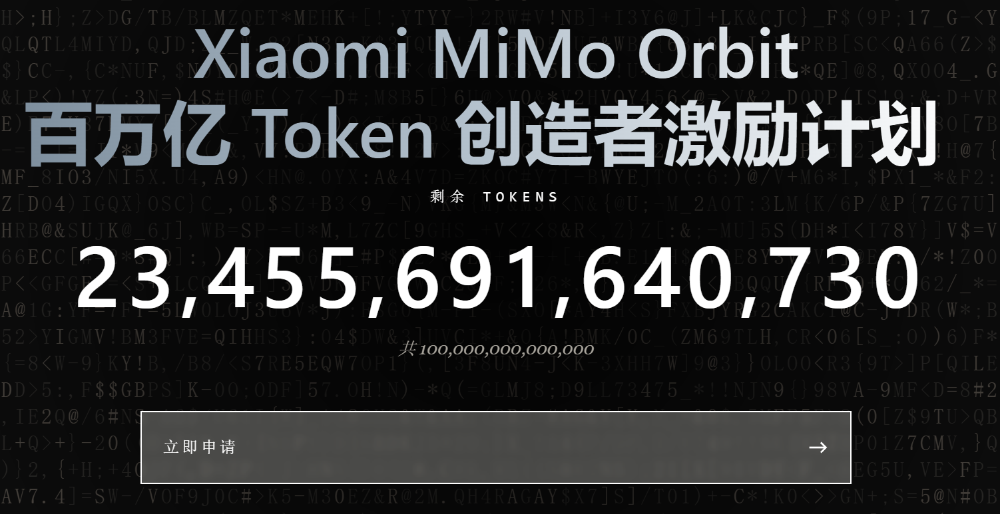
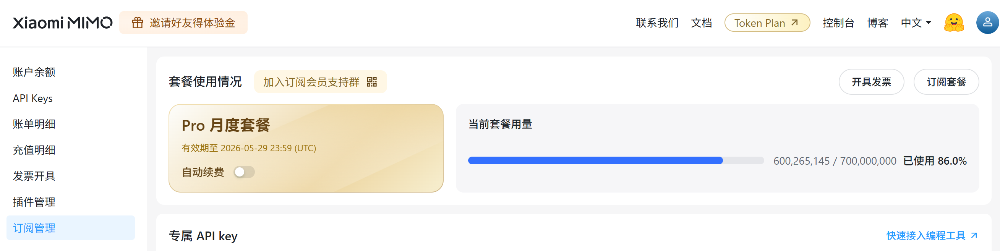
我拿了7个亿，不是最高档位，有同事申请到了16个亿。虽然只能用一个月，AI订阅全面收紧的当下，能减少一些TOKEN焦虑，还是很有价值的。
AI订阅的现状与思考
大平台的AI订阅全面收紧（具体数据可以参考这篇文章 AI 订阅策略调研报告：各大厂商的定价体系及其变化趋势（2026-05-12） ），qoder价格翻倍、GitHub copilot pro 没了claude opus，甚至后续按token计费、阿里/glm/kimi 的plan都抢不到、minimax稍微容易抢，但毕竟模型大小只有别人的一半。
就算仅仅只是把token利用在了日常助手的AI调用上，这个费用预期开销会越来越大，用得越多就会发现能用的地方越来越多，深不见底。像小龙虾这样的"无脑堆砌提示词"的智能体出现后，过去宣传免费送百万token的标语成了笑话（正好写这篇文章的时候阿里云打电话给我说qwen3.7-max上线，送我百万token，笑嘻了...），因为给小龙虾发一句话发过去，小龙虾会加长到十万token再给到大模型。对比claude code 的两万token 和codex的一万token，小龙虾可谓是极其浪费。而小米的罗福莉能在大家都在推小龙虾套餐的时候公开指出这个问题，可谓是非常坦率了。
高端算力浪费在日常重复的琐事上，这是对AI的一种亵渎。我猜在节约用水、节约用电的基础上，以后会多一项节约用token的提倡，毕竟token就是用电换的，在没有可控核聚变的情况下，电力消耗和温室效应是正相关的。
所以，个人认为，如果是日常一些固化的处理，用不上AI去分析去执行操作的，完全可以用AI把程序给写出来，以后自己一键执行就好了，真没必要写个skill用聊天的方式去指挥agent干活，聊天打字的时间还不如自己直接点一下按钮快得多。
所以前期趁着还有免费token以及token不那么贵的时候，赶紧开发一些工具去解决掉一些问题。
实际的例子
内容创作者，肯定会需要把自己的内容同步到不同的平台。目前我的博客主站是halo，每次写完都得手动粘贴到不同平台进行发布，有时候还要换文章里的链接，虽然很早之前我就写过一个python脚本来自动同步，但是有些平台api换了，那个脚本就没用了。
于是我拿到这7亿小米mimo token后，干了这几件事：
- 把小米mimo接入到vscode的claude插件里
- 开发了halo-SSG:创建我的halo博客静态镜像站 https://github.com/Dark-Athena/halo-SSG
- 开发了halo-bridge:将我的halo博客同步到csdn/cnblog/modb https://github.com/Dark-Athena/halo-bridge
- 开发了halo2wechat:将我的halo博客文章同步到微信公众号并建立对应关系 https://github.com/Dark-Athena/halo2wechat
实测mimo2.5pro的确是可以用于长上下文的开发了，吊打我本地部署的一系列开源qwen模型。只是mimo2.5pro不是多模态的，视觉类的得靠mimo2.5才能处理。
我不确定后续我是否会续费mimo，但是有了这么大的额度，肯定不能浪费了，开发几个解决我目前痛点的程序，就算后续不续费，程序还在，能持续节省我处理文章同步的时间。
可能有人说，我这些程序已经有人做过了，为什么还要自己做？我实测真正能用的基本都要付费，不付费的操作很麻烦。
可能又有人说，这三个程序怎么不做到一起呢？这是我后续可能会做的事，但是目前这3个有严格意义上的边界：
- halo-SSG目的创建一个完整的全静态站点，可以放到github pages/tencent edge等免费托管平台，哪怕未来我自己服务器崩了，网络上还能找到我的所有文章。
- halo-bridge目的是同步我的博客到其他博客平台（仅同步支持markdown的站点）
- halo2wechat目的是管理微信公众号文章和halo博客文章的对应关系，因为微信公众号上发文章贼蛋疼，要转换格式、填一堆栏位、还要封面图、标题也有限制，发出去还不能改。而且我自己之前本来已经手动发过一些微信公众号文章了，现在哪些还没同步过去，需要有个管理界面，能进行状态管理和文章微调。
这篇文章敲着敲着，突然我就等不及后续做了，直接开干。
qoder要涨价了，上次充的加量包还剩一点，干脆用专家团把这三个项目整合一下吧，可能不够用，剩下没做完就回头交给mimo了。
截了几张专家团干活的图，的确是赏心悦目，可惜专家团不支持使用自定义大模型api：
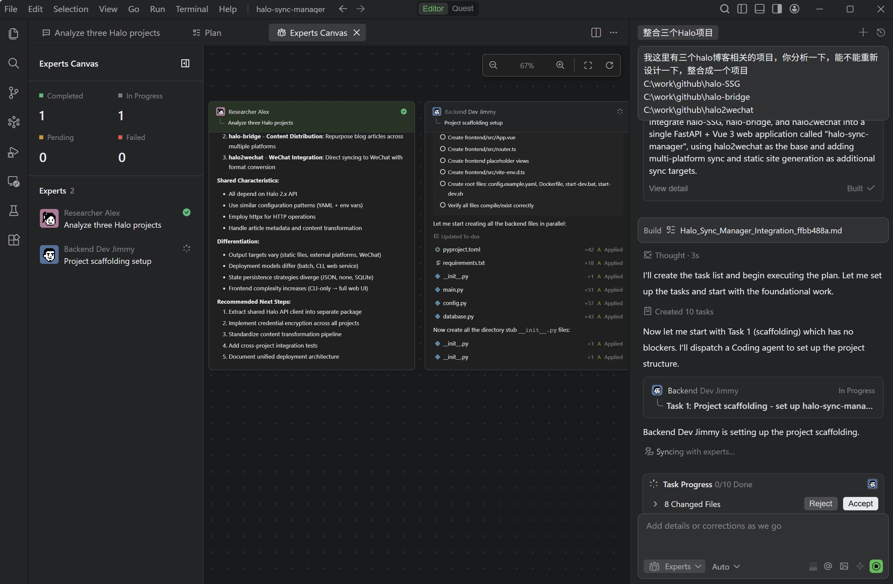
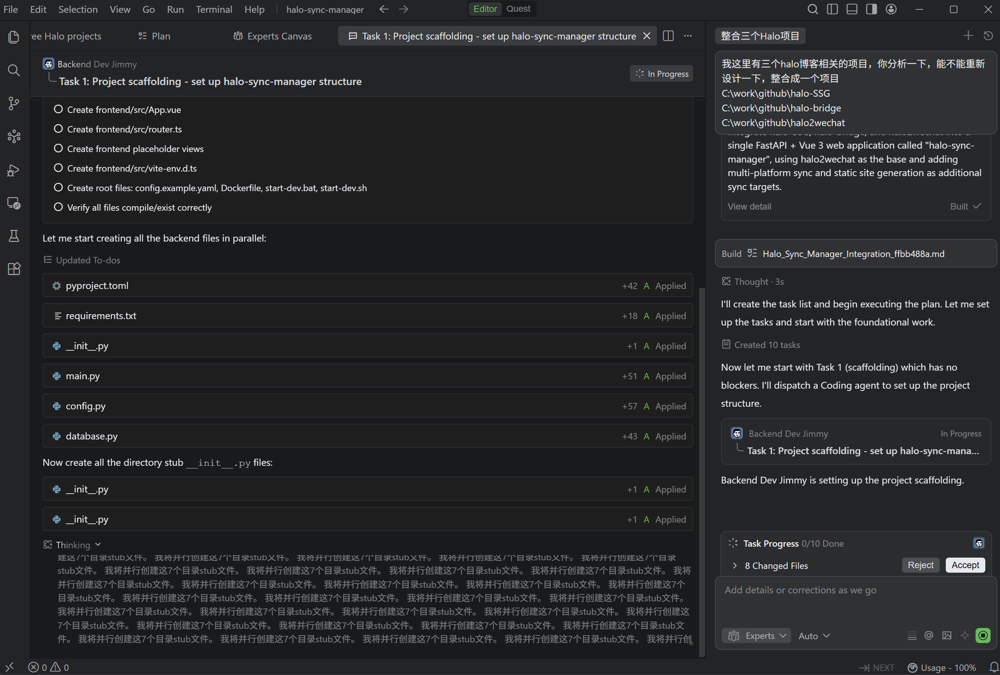
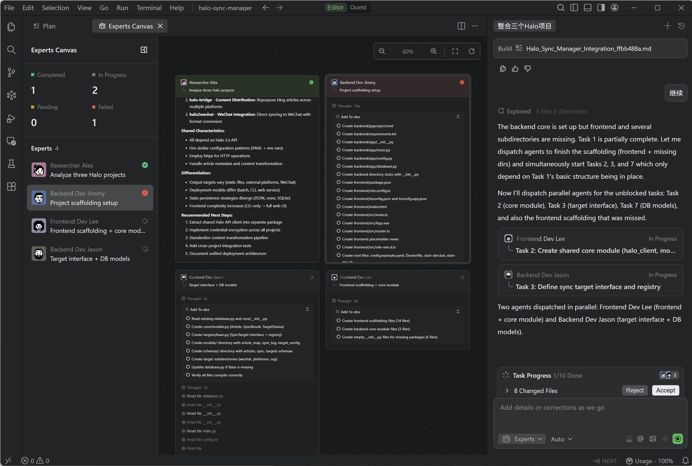
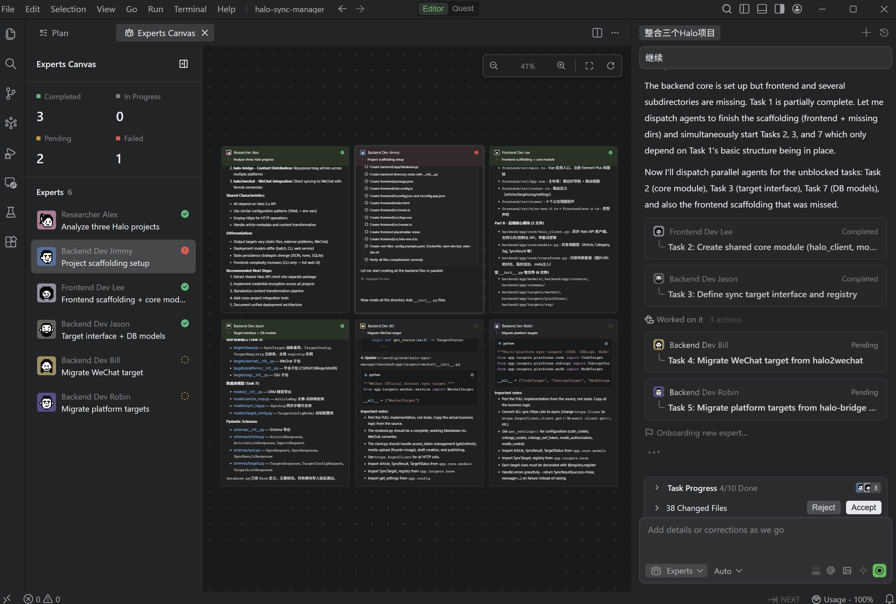
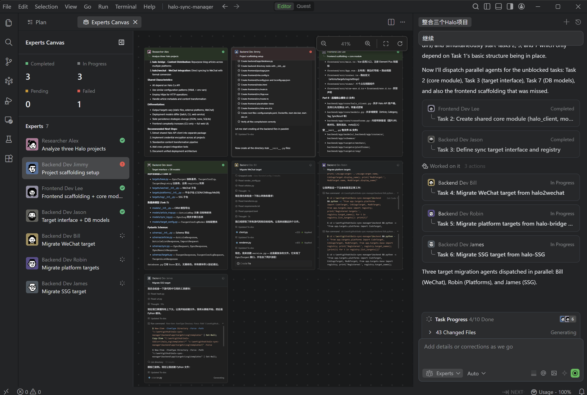
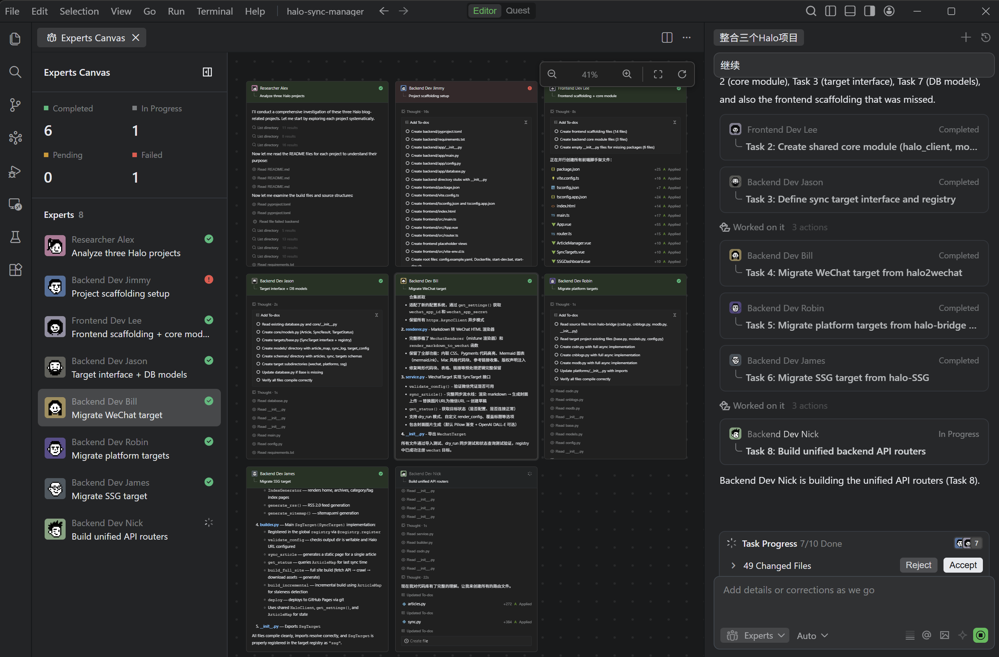
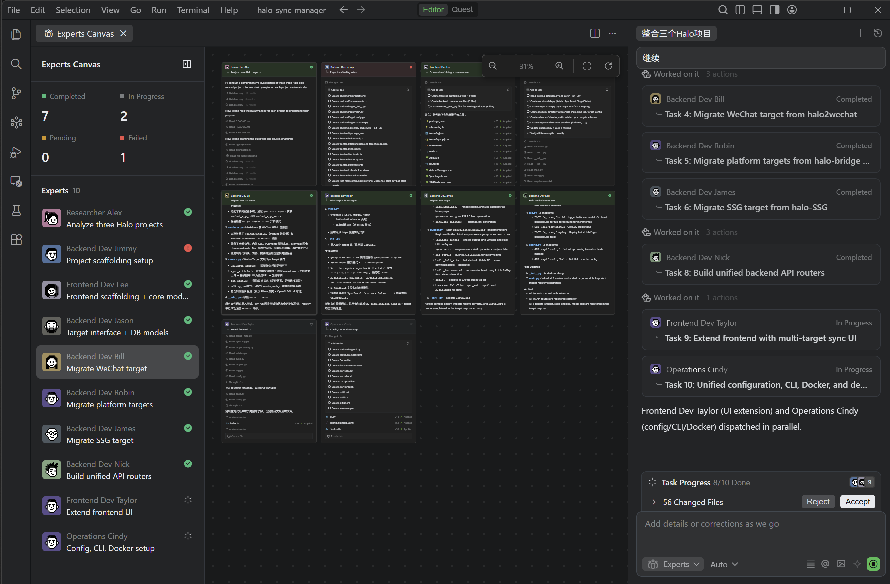
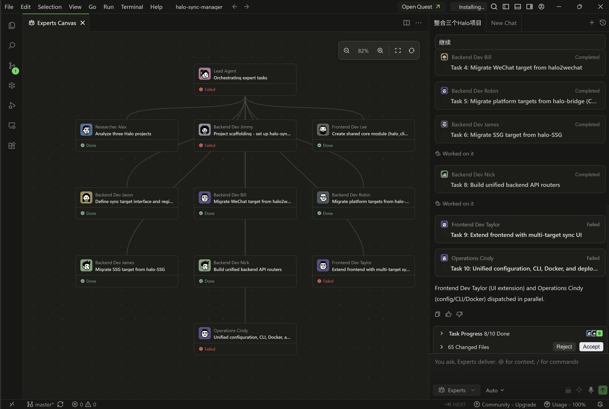
果然Credits用完了，任务还没干完，于是切到vscode里让copilot读取qoder的plan继续干，只是没法多agent并行了（为啥没用claude code，因为此时的vscode版本对claude code插件没法完全放开权限，得疯狂手动同意，加参数也没用，但等我干完这个项目后，vscode版本才更新解决了这个问题）
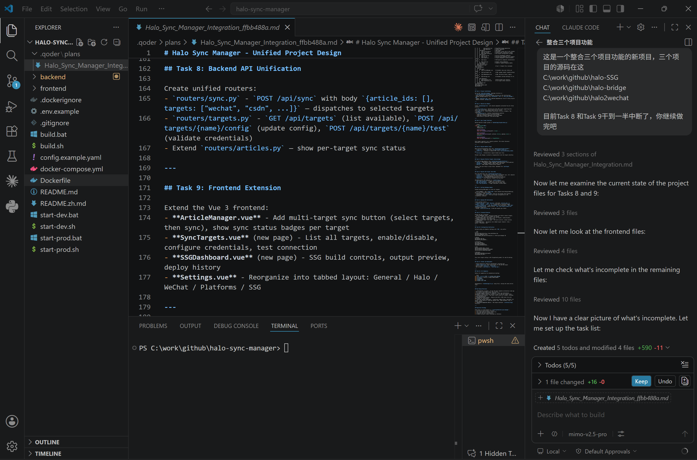
毕竟换了工具，还换了模型，而且还是半途开始干，没有前面完整的上下文，弄完有些小bug是不意外的，慢慢让AI调成我想要的样子，最后的成品用起来还是方便的。
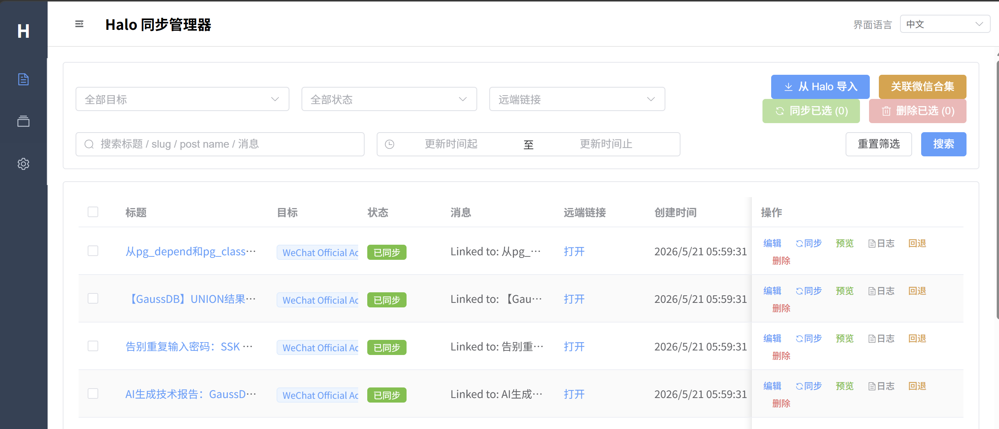
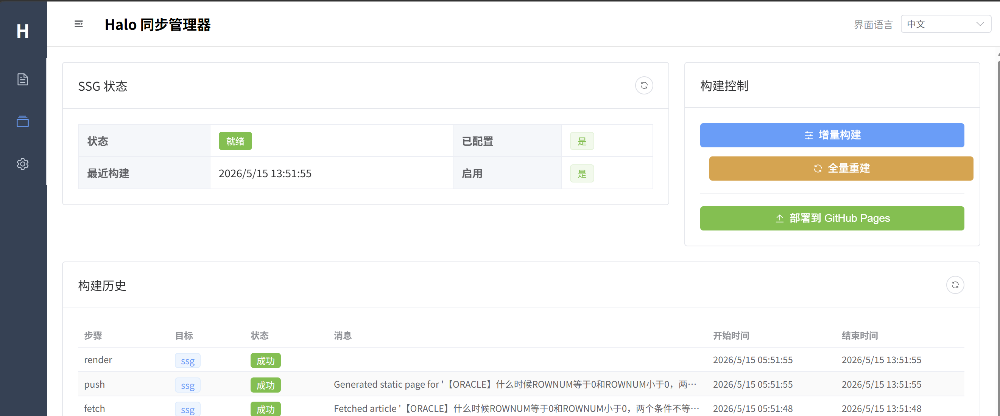
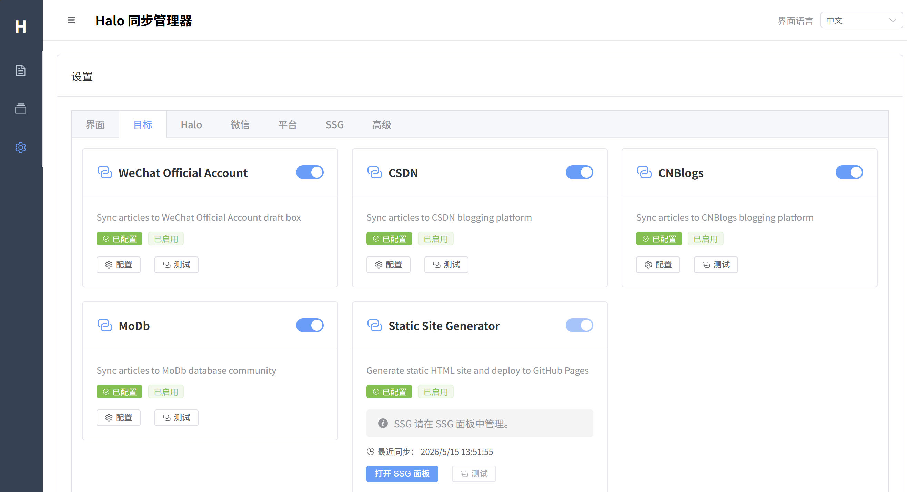
总结
趁着AI费用还能接受的时候，享受这属于平民最后的狂欢吧。